Kappale 8 Syventäviä projektioita ja syventävää aikaisemmista
Käydään tässä kappaleessa läpi pari täysin uutta projektiota ja niiden lisäksi muutamia aikaisemmassa kappaleessa käytyjen projektioiden hyödyllisiä modifikaatioita. Perehdytään tarkemmin myös pariin vähemmin esillä olevaan rakenteeseen ja käydään läpi niiden tunnistaminen ja arvioiminen eri projektioista.
8.1 Suprasternaalinen pitkittäisakseli (suprasternal notch (SSN) view; long axis)
Suprasternaalinen pitkittäisakseliprojektio on tärkeä varsinkin aortan kaaren arvioimiseksi ja sitä tulisi käyttää aina aortan sairauksia tutkiessa. Projektiosta voidaankin nähdä mm. aortan koarktaatio, dilataatioita/aneurysmia, kalkkeutumista, aortan dissekoituma tai trombeja. Käydään käyttöaiheita tarkemmin läpi aorttaa käsittelevässä kappaleessa.
Projektio löytyy, kun asetetaan anturi kaulaloveen eli jugulumiin (fossa jugularis, incisura jugularis sterni, suprasternal notch) eli solisluiden välissä olevaan sternumin huipun loveen. Anturin nypyn tulisi osoittaa n. klo 12 ja tästä hiljalleen rotatoidaan sitä, kunnes aortan kaari näkyy kuvassa hyvin (yleensä n. klo 1). Hyvä visualisaatio usein myös vaatii lievää tilttausta niin, että UÄ-aallot lähtevät enemmän kaudaalisesti ja anteriorisesti.
Näytöllä voidaan nähdä aortan kaari ja joskus myös kaikki siitä lähtevät kolme päähaaraa (ei aina näy kaikkia, mutta järjestyksessä (näytöllä) vasemmalta oikealle olisivat: a. brachiocephalica, a. carotis communis ja a. subclavia). Myös yläonttolaskimoon laskeva v. brachiocephalica voidaan usein nähdä aortan kaaren päällä. Aortan kaaren “sisällä” näkyy oikea keuhkovaltimo.
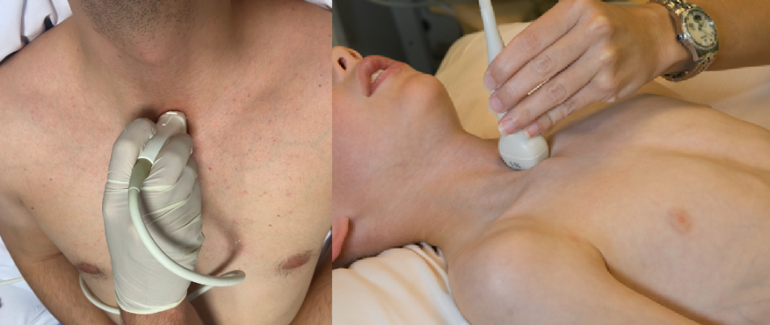
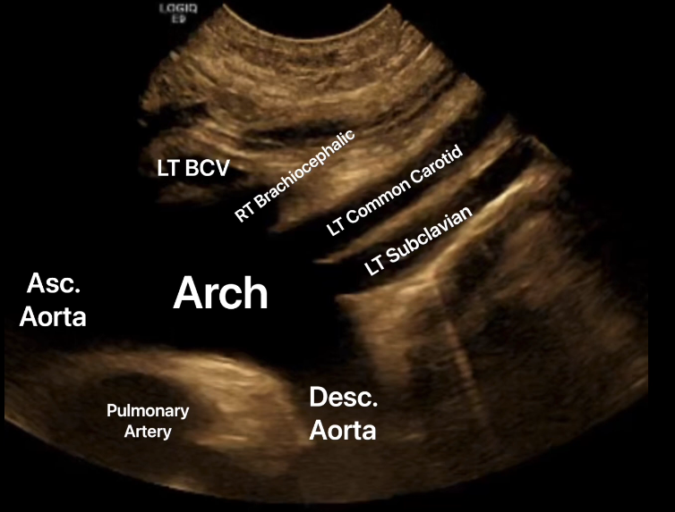
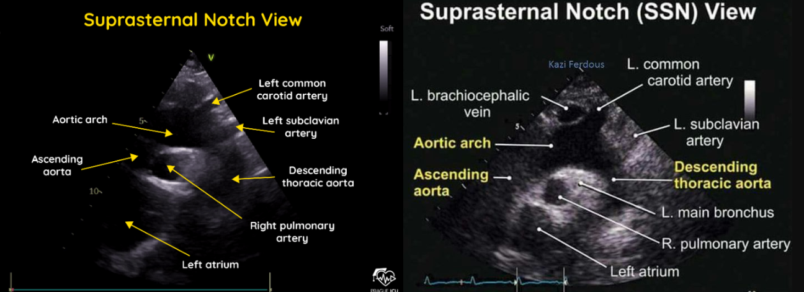
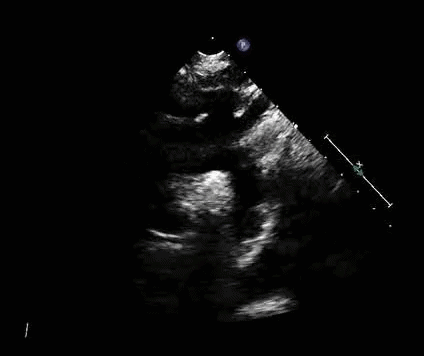
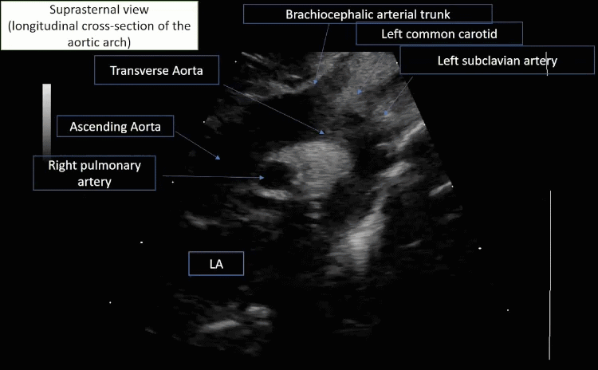
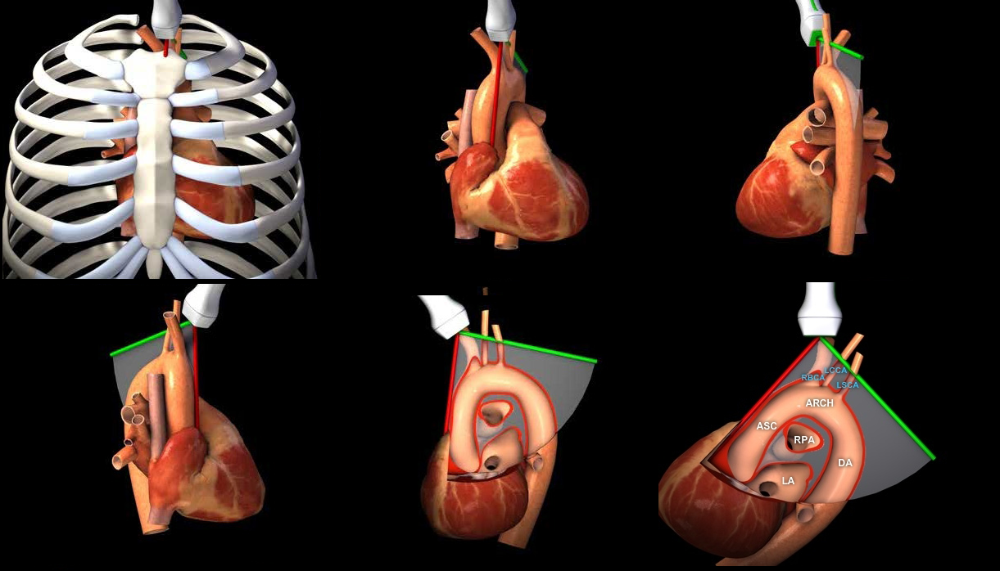
8.2 Suprasternaalinen poikittaisakseli (suprasternal notch (SSN) view; short axis)
Jos normaalista suprasternaalisesta pitkittäisakseliprojektiosta rotatoi anturia 90 astetta myötäpäivään, niin aortan kaari visualisoituu poikkileikkauksena sekä usein saadaan näkyviin keuhkovaltimon bifurkaatio oikeaan ja vasempaan keuhkovaltimoon (“Mustache view” tai “pants view”). Keuhkovaltimoita saa paremmin visualisoitua ja leikattu pitkittäisakselissaan tilttaamalla anturia anteriorisesti (anturin tyvi siis melkein koskee potilaan kaulaan). Lisäksi voidaan saada tästä pants-ikkunasta vielä hieman posteriorisesti tiltaten ja syvyyttä lisäten ns. “crab view”, jossa nähdään rapumaisesti kaikki neljä eteiseen laskevaa keuhkolaskimoa.
Poikittaisakseliprojektiota voidaan käyttää mm. pants-ikkunan tapauksessa vastasyntyneilla avoimen ductus arteriosuksen tutkimiseen ja pulmonaalihaarojen stenoosin arvioimiseen. Crab-ikkunaa voidaan käyttää mm. poikkeavan keuhkolaskimoiden paluun (anomalous Pulmonary Venous Return; TAPVR / PAPVR) tutkimiseen. Poikittaisakseli suprasternaalisesti on siis harvinaisesti käytetty projektio aikuispopulaatiossa.
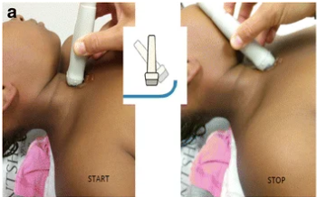

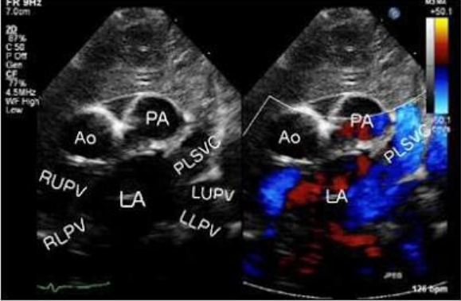
8.3 Oikea parasternaalinen (Right Parasternal Ascending Aorta)
Tyypilliset parasternaaliset projektiot haetaan rintalastan vasemmalta puolelta, mutta on myös olemassa oikeanpuoleisesti kuvattuja projektioita. Yleisin näistä on nousevaa aorttaa hyvin visualisoiva “Right Parasternal Ascending Aorta”-projektio.
Se haetaan n. 2.-3. kylkiluuvälistä rintalastan oikealta reunalta. Anturin nypyn tulisi osoittaa n. potilaan vasempaan solisluuhun eli n. klo yhteen. Joissakin ohjeissa (esim. alla olevassa 3D-kuvassa) anturin tulisi osoittaa n. potilaan oikeaan solisluuhun – tällöin vain ei yleensä leikata ihan samalla tavalla aortan suuntaisesti mahdollisimman pitkältä matkalta.
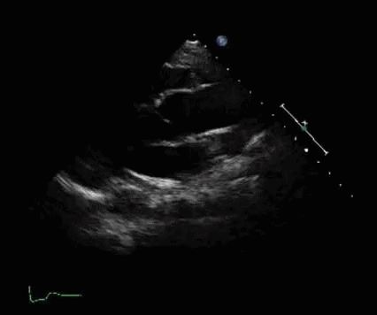
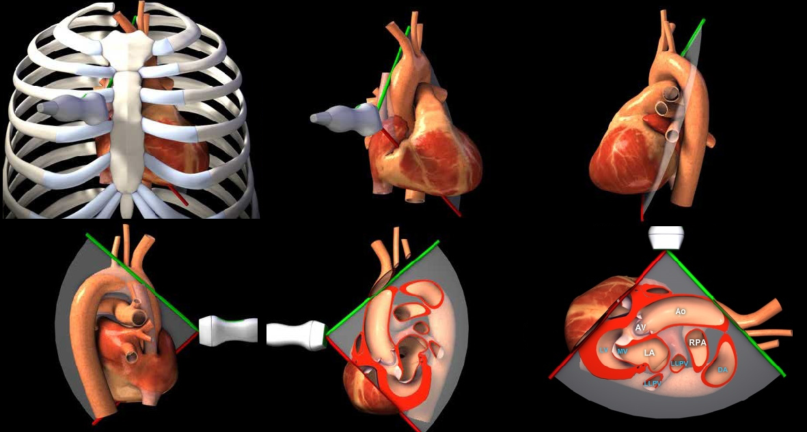
8.4 PLAX RV Inflow Tract View (RVIT)
Välillä trikuspidaaliläpän ja sen vuodon arviointi on vaikeaa apikaalisesti, jos sydämen asento tai yleisesti näkyvyys on apikaalisesti suboptimaalinen. Näkyvyys voi kuitenkin parasternaalisesti olla hyvä, jolloin oikean eteisen, trikuspidaaliläpän ja oikean kammion alueen arvioiminen saattaa olla paras tehdä PLAX-projektion modifikaatiosta eli ns. “right ventricular inflow tract (RVIT)” -projektiosta. Joskus kuulee myös nimityksen “atyyppinen PLAX”, mutta tarkempi nimitys on RVIT.
RVIT-ikkunaan pääsee kallistamalla (tilt) anturia alaspäin PLAX:sta, jolloin ultraääniaallot lähtevät yleensä enemmän portilaan oikeaa lonkkaa kohti. UÄ-aallot leikkaavat tällöin oikeaa puolta sydämestä. Näytöllä voidaan erityisesti nähdä oikea kammio ja sen alla trikuspidaaliläppä, jonka alla taas oikea eteinen. Lisäksi voidaan tunnistaa ylä- ja alaonttolaskimo (IVC ja SVC) sekä sinus coronariuksen laskuaukko.
- Rakenne on myös mm. apikaalisesti yleensä nähtävissä, jos sellainen on.
RVIT-projektion tärkein käyttöaihe on trikuspidaalivuodon gradientin mittaaminen. Tämä voidaan tehdä monesta muustakin ikkunasta, mutta tarvittaessa RVIT on yleensä hyvä ja vuotosuihku usein kulkee UÄ-aaltojen myötäisesti, jolloin saadaan tarkat mittaukset.
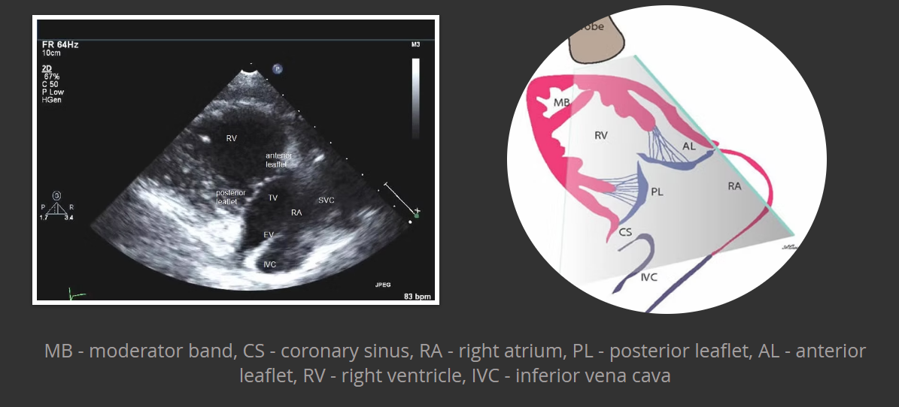
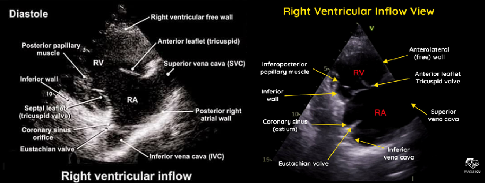
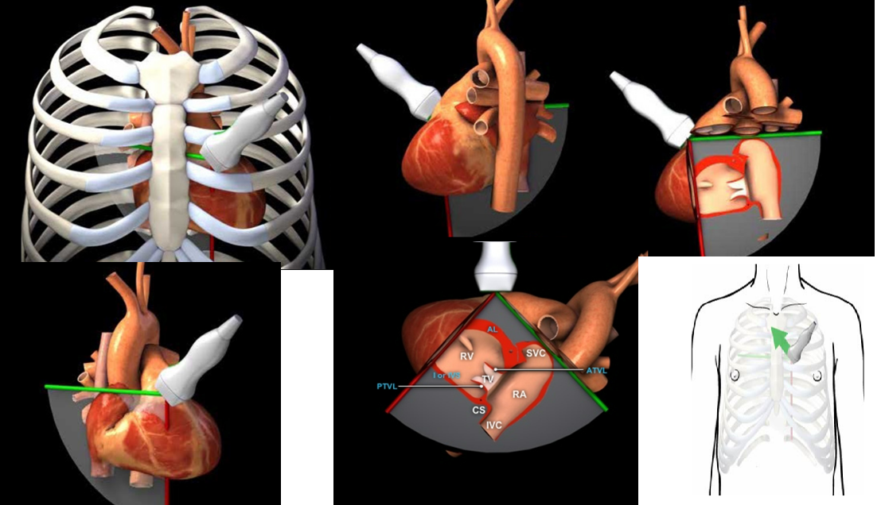

8.5 PLAX RV Outflow Tract View (RVOT)
Oikean kammion ulosvirtauskanava (RVOT) saadaan tyypillisestä PLAX:sta modifioituna niin, että tiltataan anturia superiorisesti (RVIT taas tuli inferiorisessa tilttauksessa) eli UÄ-aallot lähtevät enemmän kohti oikeaa olkapäätä. Näytöllä voidaan tällöin erityisesti nähdä oikea kammio, pulmonaaliläppä ja pulmonaalirunko (sekä mahdollisesti sen haarautuminen). Voidaan siis arvioida pulmonaalivirtauksia, arvioida pulmonaariembolioita tai mahdollista RVOT:n dilataatiota / paikallisia liikehäiriöitä (esim. arytmogeenisessä oikean kammion kardiomyopatiassa).
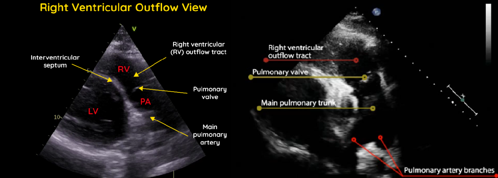
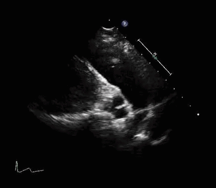
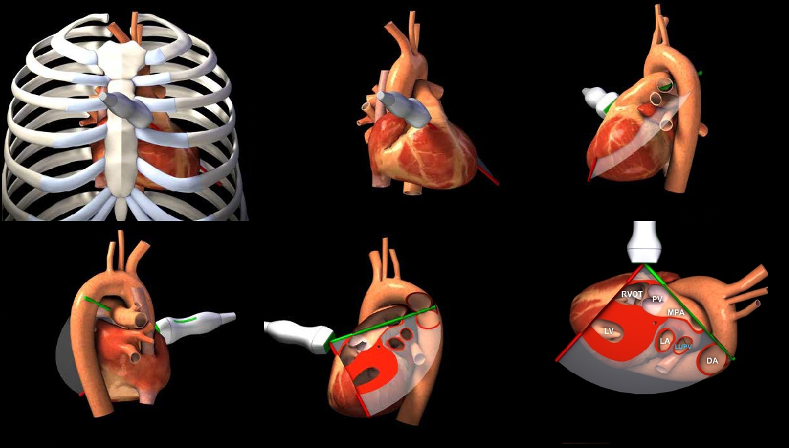
8.6 Subkostaalinen poikittaisakseli (Subcostal SAX)
Viime kappaleessa käytiin läpi subkostaaliset neli- ja viisilokerokuvat. Näiden pitkittäisakseliprojektioiden lisäksi on tietysti myös vastapainona poikittaisakseliprojektiot, jotka peilaavat pitkälti parasternaalisia pitkittäisakseli-ikkunoita. Subkostaaliset poikittaisakseliprojektiot voi siis jakaa PSAX:n tapaan eri tyyppeihin leikkaustason mukaan: kraniaalisimpana on aorttataso, sitten kaudaalisesti tiltatessa mitraaliläppätaso ja niin edespäin keskipapillaaritaso ja apikaalinen taso.
8.6.1 Aorttataso - Subkostaalinen poikittaisakseli
Poikittaisakseliin pääsee hyvin samalla tavalla kuin parasternaalisesti pääsee PLAX:sta PSAX:iin. Anturia siis käännetään subkostaalisesta nelilokerokuvasta 90 astetta, tällä kertaa vain vastapäivään (jos on kuvannut subkostaalisen nelilokerokuvan ns. klassisella tavalla eli “nypy” potilaan vasemmalla).
Ensimmäiseksi yleensä piirtyy aorttaläppätaso. Hyvin samalla tavalla kuin PSAX:ssa, niin keskelle piirtyy aorttaläppä, sen alle vasen eteinen ja tämän vasemmalle yläviistoon oikea eteinen ja siitä aorttaläppää kiertäen oikea kammio, pulmonaaliläppä ja pulmonaalitrunkki.
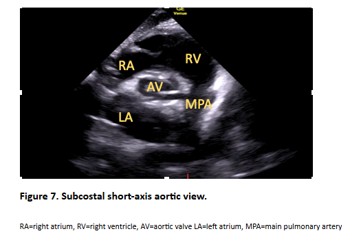
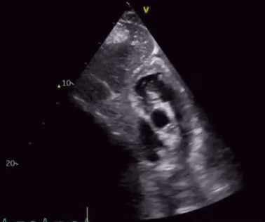
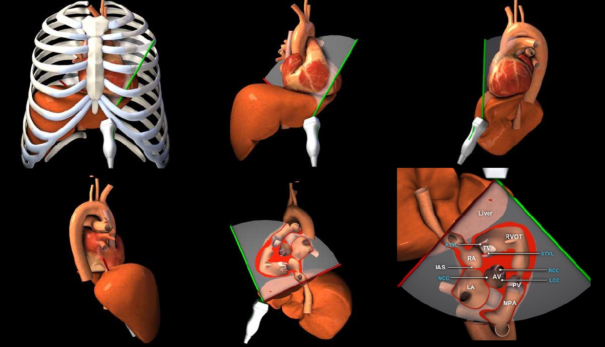
8.6.2 Mitraalitaso - Subkostaalinen poikittaisakseli
Kun aorttatasosta tilttaa anturia enemmän kaudaalisesti eli päin sydämen kärkeä, niin saadaan mitraaliläppätaso esiin. Samalla nähdään PSAX:n mitraalitason tyyliin oikean kammio sen vierellä.
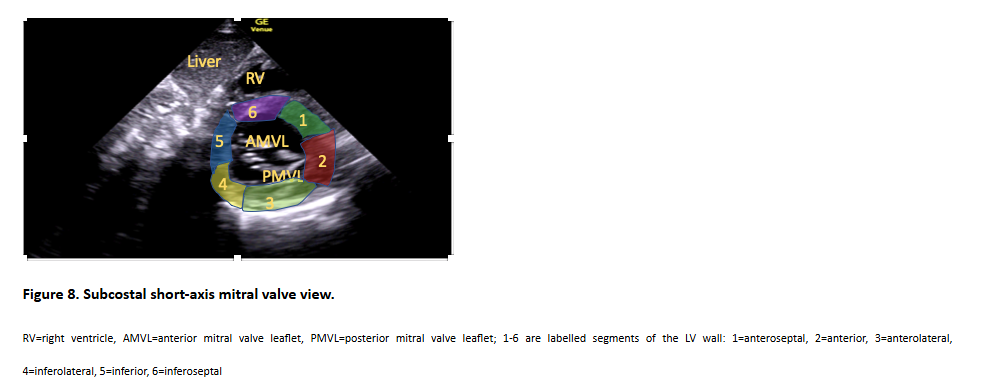
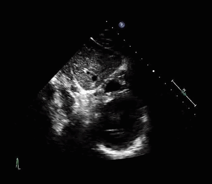
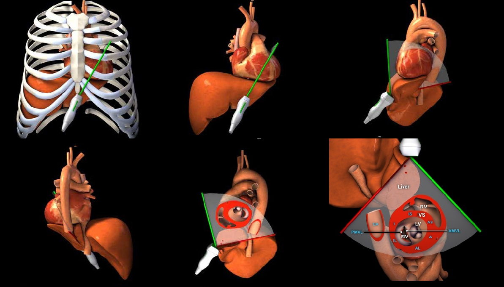

8.7 PSAX Pulmonary Artery view
PSAX:n yksi modifikaatioista on ns. pulmonaalivaltimoikkuna, jossa normaali aorttatason leike anguloidaan niin, että saadaan enemmän pulmonaaliläppää ja pulmonaalirunkoa sekä mahdollisesti sen bifurkaatiota visualisoitua.
Pulmonaalirakenteita saa enemmän kuvaan, kun tilttaa anturia ihan hieman lisää superiorisesti ja joskus tarvitsee lisäksi keinuttaa anturia niin, että UÄ-aallot lähtevät enemmän nypyyn eli vasempaan olkapäähän päin.
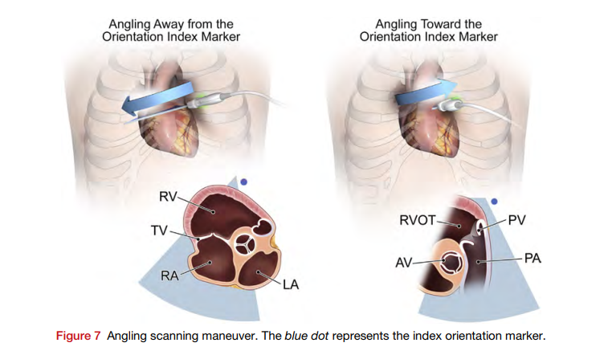
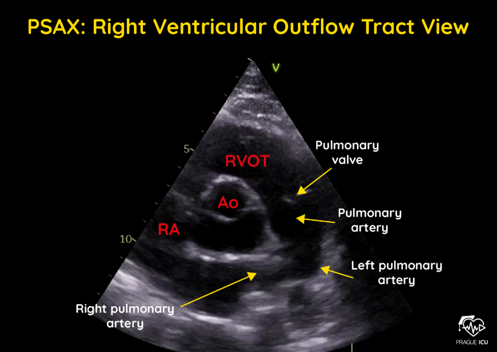
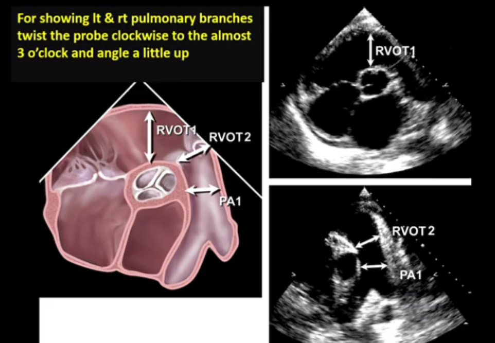
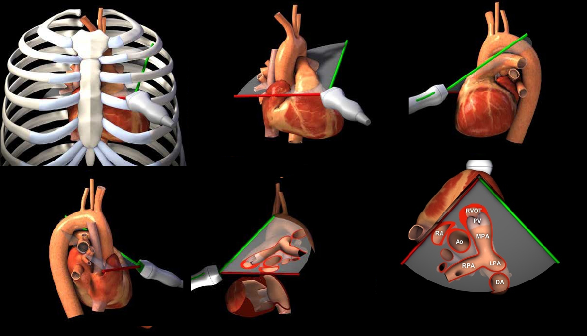
8.8 Keuhkolaskimovirtaukset
Keuhkolaskimovirtauksien mittaamisen indikaatioita ovat mm. vasemman kammion diastolisen dysfunktion, vasemman puolen täyttöpaineiden ja vasemman eteisen funktion arvioiminen sekä mitraalivuodon vaikeusasteen gradeeraus.
Keuhkolaskimoita on siis neljä (kaksi molemmista keuhkoista). Oikea superiorinen keuhkolaskimo (RUPV, RSPV) dreneeraa oikean keuhkopuoliskon ylä- ja keskilohkot ja oikea inferiorinen (RLPV, RIPV) dreneeraa alalohkon. Vasemman keuhkopuoliskon ylälohkon tyhjentää vasen superiorinen keuhkolaskimo (LUPV, LSPV) ja alalohkon taas vasen inferiorinen keuhkolaskimo (LLPV, LIPV). Kannattaa tosin tiedostaa, että kuten melkein kaikkien anatomisten rakenteiden kanssa, niin myös keuhkolaskimoissa on anatomisia variantteja.
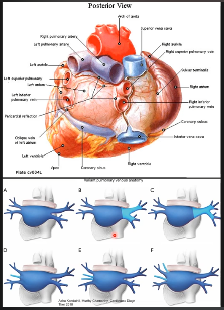
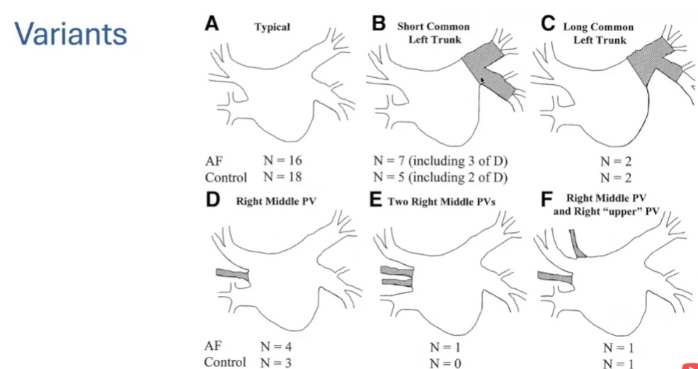
Keuhkolaskimoiden arvioiminen TTE:ssä on yleensä vaikeaa, mutta usein mahdollista. Jos niiden tarkkaa arvioita tarvittaisiin syystä tai toisesta, niin TEE:llä saadaan paljon kirkkaampi kuva. TTE:llä muiden mittausten yhteydessä arvioidut keuhkolaskimot voivat kuitenkin tarjota usein arvokasta lisädataa.
Yleisesti voi ajatella, että oikeanpuoleiset laskimot näkyvät paremmin (tai ainakin virtaukset ovat paremmin mitattavissa, koska virtaukset ovat enemmän anturin suuntaisia) apikaalisissa projektioissa, kun taas vasemmat laskimot parasternaalisesti. Yleensä siis parhaiten A4C-projektiosta saadaan mitattua RUPV ja se onkin yleisimmin käytetty suoni mittauksissa. Muiden projektioiden ja suonien hyödyntäminen on harvinaisempaa, mutta ne on hyvä oppia tunnistamaan, jottei kuvittele normaalien keuhkolaskimoiden olevan epänormaaleja rakenteita.
8.8.1 Apikaalisesti
Oikeat keuhkolaskimot voidaan tunnistaa apikaalisesta kuvasta eteisväliseinän viereisinä rakenteina, joista voi dopplerilla nähdä virtausaaltoja. Yleensä parhaiten visualisoituu RUPV. RLPV:n saa visualisoitua tilttaamalla probea hieman alaspäin tai rotatoimalla vastapäivään. Apikaalisesti ei yleensä saada mitattua virtauksia vasemmista laskimoista, vaikka ne visualisoituisivatkin, koska suonet kulkevat yleensä kohtisuorasti anturiin nähden.
Kannattaa yleensä myös säätää Nyquistin rajaa hieman alaspäin, koska virtausnopeudet ovat yleensä hieman hitaammat kuin muualla sydämessä. Jos virtauksia ei siis tule esiin tyypillisellä rajalla, niin voi hitaasti laskea rajaa - yleensä n. 40cm/s tai alle on hyvä.
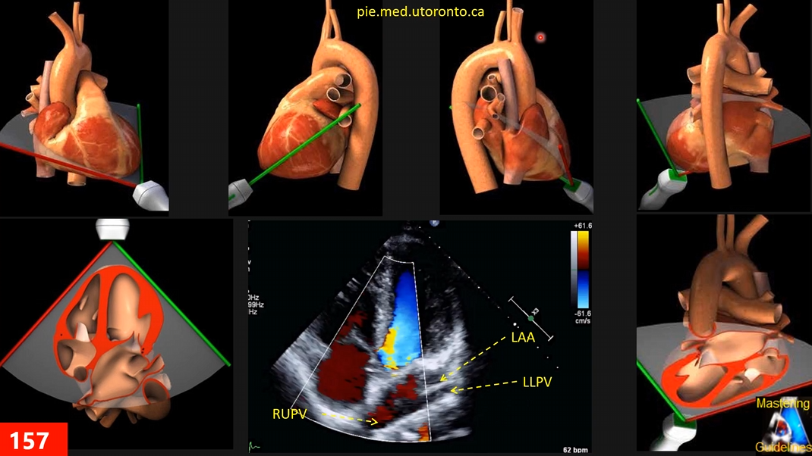
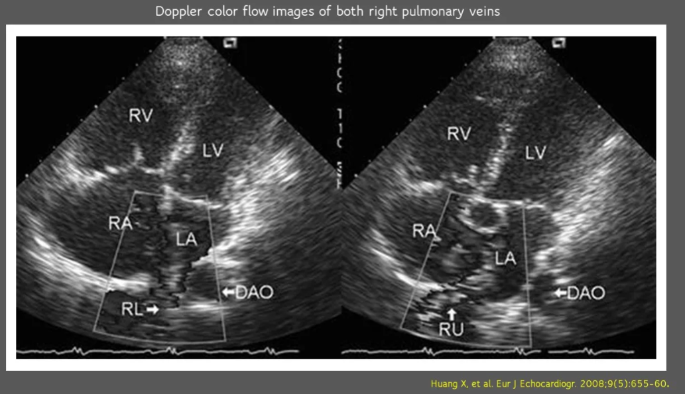
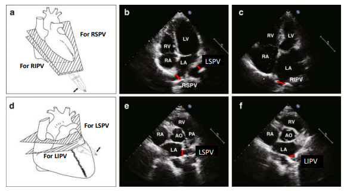
8.8.2 Parasternaalisesti
Parasternaalinen keuhkolaskimoiden arvio on harvinaisempaa, mutta mahdollista. Parhaiten voidaan mitata vasempien laskimoiden virtausta ja ne näkyvät PLAX-ikkunassa yleensä laskevan aortan vasemmalla puolella.
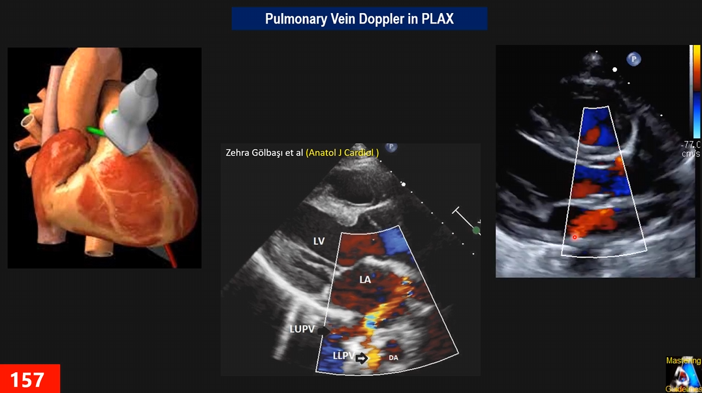
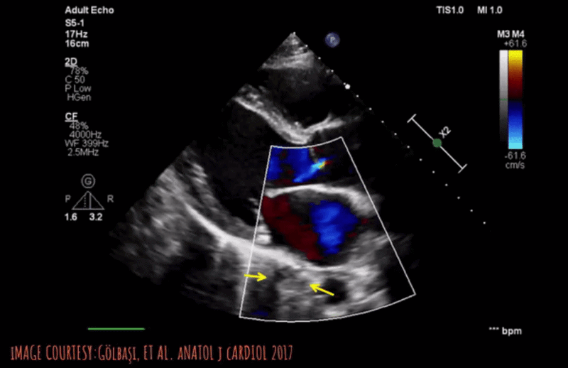
PSAX-ikkunassa taas on usein ongelmana se, että laskimo kulkee kohtisuorasti anturiin eikä doppleria saa luotettavasti mitattua. Tämä ongelma on kuitenkin yleensä pääasiassa LUPV:n kanssa ja LLPV saadaan visualisoitua, kun hieman siirretään anturia potilaan päätä kohti ja tiltataan alaspäin. Tällöin LLPV visualisoituu LUPV:n alle enemmän anturinsuuntaisesti kulkevana suonena, josta saa dopplerilla virtaukset hyvin esiin. RUPV myös usein visualisoituu samalla.

8.9 Sinus coronarius
Sinus coronarius (sinuspoukama, coronary sinus) tarkoittaa suurta sepellaskimoviemäriä, johon sydämen laskimoverenkierrosta huolehtivat sepellaskimot avautuvat. Sinus coronarius sitten avautuu oikeaan eteiseen. Se kulkee sydämen takapinnalla eteisten ja kammioiden välisessä uurteessa (sulcus coronarius)

SC voidaan visualisoida pääasiassa apikaalisesti (A4C, A2C), PLAX:ssa ja RV Inflow-projektiossa.
Sinus coronarius on hyvä oppia tunnistamaan projektioista, jottei sitä sekoita muihin rakenteisiin. Lisäksi sen arviointi auttaa mm. oikean puolen paineiden nousemisen arvioinnissa sekä myös harvoin esim. persistoivan vasemman vena cava superiorin tutkimisessa (PLSVC) – sinus dilatoituu näissä tapauksissa.
8.9.1 Apikaalinen sinus coronarius
Sinus coronarius voidaan nähdä parhaiten ns. apikaalisessa sinus coronarius -projektiossa. Se löytyy, kun A4C:stä tilttaa anturia posteriorisesti/kaudaalisesti (vrt. A5C, joka saadaan tiltatessa kraniaalisesti/anteriorisesti). Normaalisti rakenne on aika pieni ja se voi kadota osassa sykliä (ensimmäinen gif). Oikean puolen paineiden noustessa tai sinus coronariuksen virtauksen noustessa (esim. PLSVC) voi sinus coronarius dilatoitua merkittävästi, jolloin se usein näkyy vinon leikkauskulman takia tuubin sijasta horisontaalina kartiona, jonka tyvi avautuu oikeaan eteiseen.
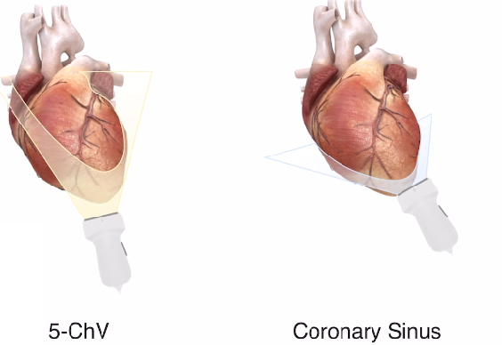
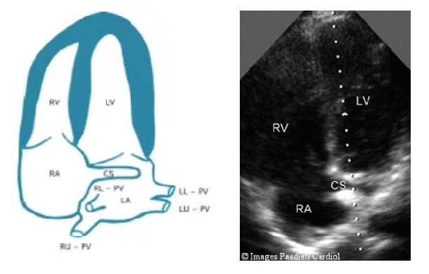


8.9.2 Sinuspoukama A2C:ssa
Apikaalisessa kaksilokerokuvassa sinus coronarius näkyy vasemman eteisen vierellä poikkileikkauksena. Normaalisti se on pieni ja heikosti nähtävissä, mutta dilatoituneena voi olla hyvinkin prominentti (viimeinen kuva gifin alla).
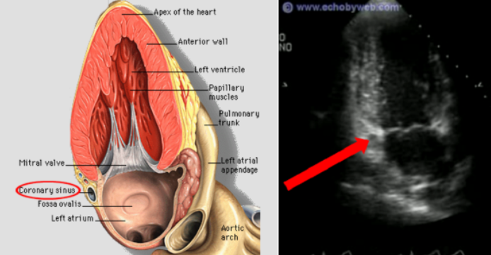
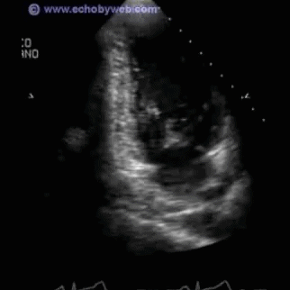
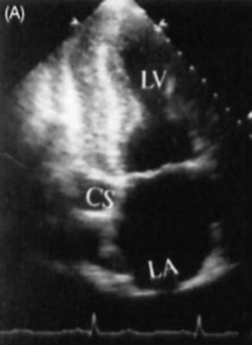
8.9.3 Sinuspoukama PLAX:ssa
PLAX:ssa normaali sinuspoukana näkyy pienenä anekooisena pisteenä LA:n ja LV:n välissä. Se sijaitsee perikardiumpussin sisällä toisin kuin laskeva aortta – näitä ei siis voi kovinkaan helposti sekoittaa. Sinuspoukama myös liikkuu sydämen pitkän akselin mukaisesti sydämen supistuessa ja relaksoituessa.
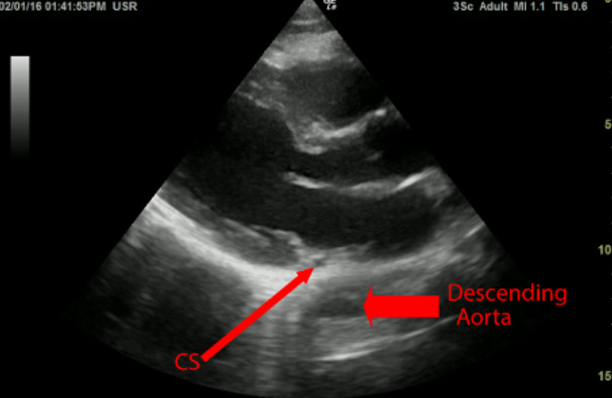

Dilatoituneen sinus coronariuksen taas voisi helposti sekoittaa laskevaksi aortaksi, jos ei tietäisi dilatoituneen sinus coronariuksen olemassaolosta tai tietäisi, miltä se näyttää. Alla olevassa klipissä näkyy dilatoitunut sinuspoukama, jonka ekskursio on merkittävästi vähentynyt sopien huomattavan heikkoon LV:n systoliseen toimintaan.

Tässäkin klipissä on dilatoitunut sinus coronarius, mutta se oli sattumalöydös tällä potilaalla. Potilaalla todettiin olevan persistoiva vasen SVC.

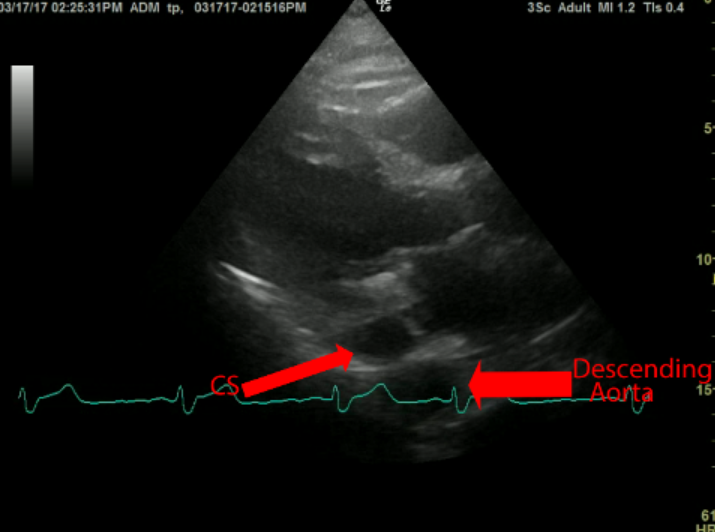